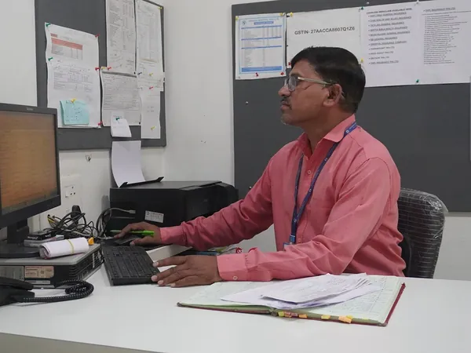
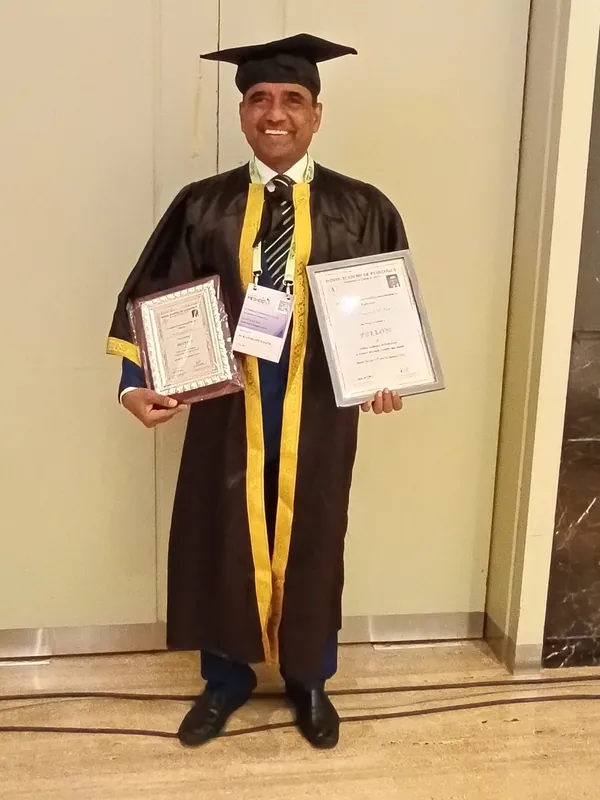
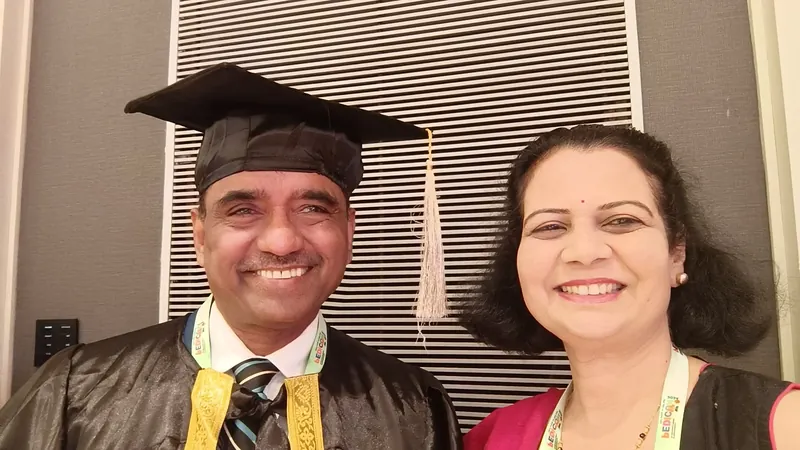
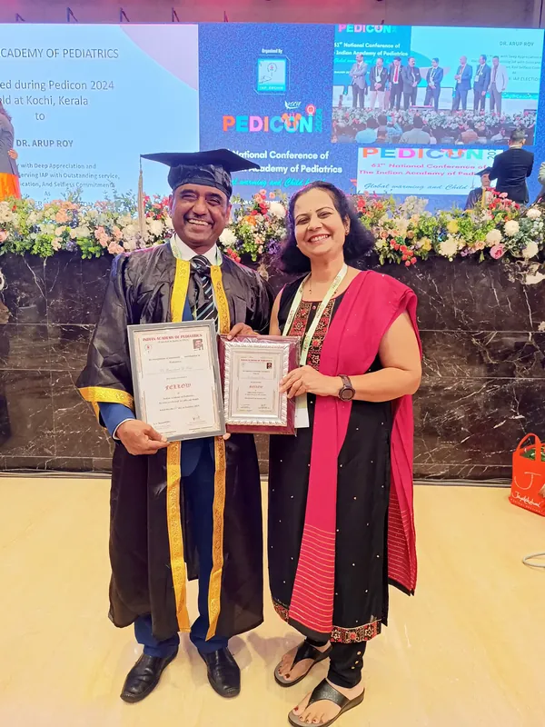
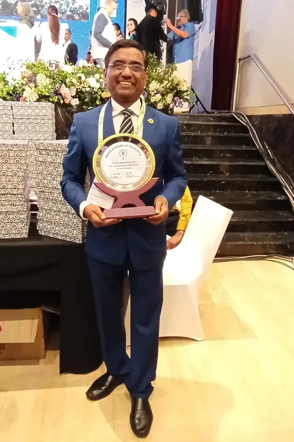
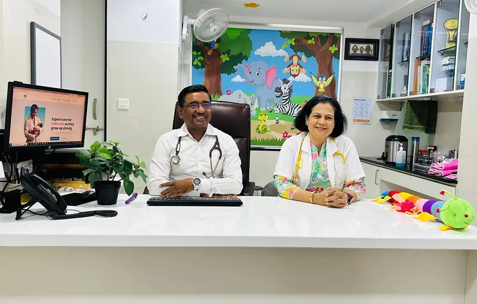
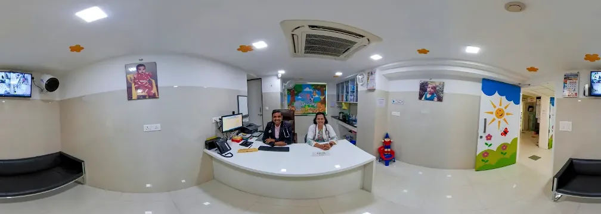
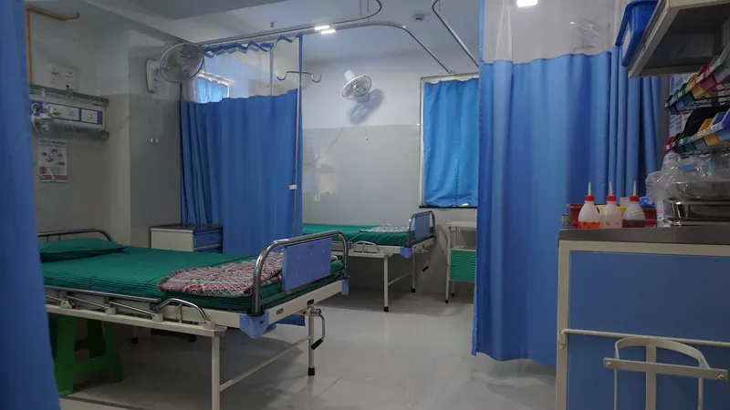

Pediatrician · Nashik
Dr. Ramakant Patil
MBBS, MD (Paediatrics), FIAP
Caring for children, guiding families.
For over three decades, Dr. Ramakant Patil has looked after children and advised their parents. He practises at Antara Hospital in Nashik, has taught at a medical college, and has held senior roles in the Indian Academy of Pediatrics.
Antara Hospital · Kulkarni Colony, Sharanpur Road, Nashik
At a glance
- 1989MD in PaediatricsPoona University
- 2023Fellowship of the IAPFIAP, Indian Academy of Pediatrics
- 2023President, MAHAIAPMaharashtra Academy of Pediatrics
- 2026IAP Executive Board MemberMaharashtra
About
Over three decades of pediatric care

Dr. Ramakant Dajiba Patil is a pediatrician in Nashik, associated with Antara Hospital and Nelson Hospital. Alongside seeing patients, he counsels families, teaches, and has long been active in pediatric associations.
He completed his MBBS in 1986 and his MD in Paediatrics in 1989, both from Poona University, and studied at B. J. Medical College, Pune. From 2015 to 2017 he was Professor of Paediatrics at Dr. Vasantrao Pawar Medical College, Hospital & Research Centre, Nashik.
His clinical interests include childhood asthma and pediatric critical care. He was president of MAHAIAP in 2023, and in 2026 he represents Maharashtra on the Executive Board of the Indian Academy of Pediatrics.
Credentials
- MBBS
- Poona University, 1986
- MD (Paediatrics)
- Poona University, 1989
- Medical college
- B. J. Medical College, Pune
- Fellowship
- FIAP, Indian Academy of Pediatrics, 2023
- Teaching
- Professor of Paediatrics, Dr. Vasantrao Pawar Medical College, Nashik, 2015–17
- Clinical interests
- Childhood asthma · Pediatric critical care
- Hospitals
- Antara Hospital, Nashik · Nelson Hospital, Nashik
- Registration
- Maharashtra Medical Council, Reg. No. 57173
Services
From newborn to adolescent
Consultations at Antara Hospital, Nashik, for children from birth to the teenage years.
When a child is unwell
Pediatric consultations
Assessment and treatment of common childhood illnesses, with clear advice for parents.
Infectious diseases
Care for fevers and infections in children, including tuberculosis, a subject he has lectured on.
Childhood asthma and wheezing
Diagnosis, follow-up over time, and help with using inhalers correctly.
As a child grows
Newborn and infant care
Help with feeding, early growth and the usual worries of the first months.
Growth and development
Regular checks on height, weight and developmental milestones.
Vaccination and preventive care
Vaccination advice and preventive check-ups through childhood.
Nutrition and child wellness
Practical advice on diet, eating habits and daily routines.
When parents have questions
Common childhood concerns and family counselling
Time for parents and grandparents to talk through everyday problems such as constipation, breath-holding spells, repeated urine infections, pica and gas in babies.
Approach
Care that includes the family
Children are not small adults; their needs change at every stage of growth. A visit is also a conversation with the parents: what is happening, what to watch for, and what comes next.
Early attention
Looking into concerns early, and saying clearly when further tests are needed.
Prevention
Vaccination, good nutrition and healthy routines, before illness starts.
Clinical judgement
Careful examination, and decisions shaped by long experience.
Family education
Explaining the problem and the next steps in plain language.
Continuity
Following a child from infancy through the school years.
Leadership
Service to the profession
Besides his practice, Dr. Patil has served the Indian Academy of Pediatrics and its Maharashtra branch in elected and committee roles, and has led Nashik’s hospital owners’ association.
Roles by year
-
2026
Executive Board Member
Indian Academy of Pediatrics — Maharashtra
-
2025
Member, West Zone
IAP Grievances Redressal Cell
-
2024
West Zone Coordinator
IAP NTEP Committee
Chairman
MAHAIAP Constitution Reform Committee
President
Hospital Owner Association of Nashik
-
2023
President
MAHAIAP
Member
IAP Finance Committee
-
2022
Executive Board Member
Central IAP — Maharashtra
Organising Chairman
MAHAPEDICON 2022, Nashik
Earlier roles
- Founder, Nelson Hospital, Nashik
- Past President, IAP Nashik Branch
- Past State Secretary, MAHAIAP
- Past Vice President, IMA
Member, IAP National Respiratory Chapter · No. R-01002
Teaching and talks
-
2015–17
Professor of Paediatrics
Dr. Vasantrao Pawar Medical College, Hospital & Research Centre, Nashik.
-
2022
Speaker, drug-resistant TB course
Medical Learning Hub course on drug-resistant tuberculosis in children: diagnosis and the treatment algorithm.
-
20 August 2023
Chief guest, MAHA IYCFCON–POSHAN 2023
Conference on infant and young child feeding, organised by the Department of Pediatrics, Dr. D. Y. Patil Vidyapeeth, Pune.
-
31 May 2024
Panelist, GenNext Hospital Summit, Nashik
Panel on digital technology in hospitals, reported by Express Healthcare.
-
17 January 2026
Programme speaker, PEDICON 2026
CME session “Managing Over-Involved or Anxious Parents: A Conversation Strategy”.
Recognition
Fellowship and recognition

Indian Academy of Pediatrics
Fellowship of the Indian Academy of Pediatrics
FIAP2023
Awarded to Dr. Ramakant D. Patil of Nashik in 2023. Fellowship no. F/2023/P-48.
Community
Beyond the consulting room
School health
In July 2023, as president of MAHAIAP, Dr. Patil was one of the coordinators who launched Sankalp–Sampoorna Swasthya, a school-health programme, at Navrachana Vidyalaya in Nashik. Run with fellow pediatricians and the school’s teachers, it began with Class 9 students.
He has also given talks, with other pediatricians, on excessive screen use.
Loksatta report, 28 July 2023 (Marathi) (opens in a new tab)
What the programme covers
- Healthy eating
- Exercise
- Responsible gadget use
- Mental wellbeing
- Addiction prevention
The long road
Outside the hospital, Dr. Patil cycles long distances, treks and runs. Three rides stand out.
-
2015
Support crew
Crew member for the Mahajan brothers’ Race Across America attempt.
-
2016
643 km, Deccan Cliff Hanger
Finished with Dr. Rajendra Nehete in 28 hours 44 minutes, first in the over-50 category.
-
2017
Race Across America
Finished as part of a four-rider team, riding for Orbis India’s children’s eye-care programme in Bihar.
Photographs
At conferences and ceremonies


View larger

View larger

View largerIn the press
- Loksatta28 July 2023 Launch of the Sankalp–Sampoorna Swasthya school-health programme in Nashik. (Marathi) (opens in a new tab)
- Express Healthcare7 June 2024 GenNext Hospital Summit, Nashik: panel on digital technology in hospitals. (opens in a new tab)
- The Indian Express21 June 2017 Nashik doctors ride Race Across America for children’s eye care in Bihar. (opens in a new tab)
- Times of India8 November 2016 Dr. Patil and Dr. Rajendra Nehete complete the 643 km Deccan Cliff Hanger. (opens in a new tab)
- Medical Learning Hub2022 Course on drug-resistant tuberculosis in children, with Dr. Patil among the speakers. (opens in a new tab)
- Dr. D. Y. Patil VidyapeethJuly–December 2023 MAHA IYCFCON–POSHAN 2023, with Dr. Patil as chief guest. (opens in a new tab)
3 more reports
- Times of IndiaJune 2015 The Mahajan brothers finish Race Across America; Dr. Patil was part of the crew. (opens in a new tab)
- Maharashtra TimesOctober 2019 Pediatric conference in Nashik on human milk banking; Dr. Patil among the organisers. (Marathi) (opens in a new tab)
- Maharashtra TimesOctober 2019 Workshop for nurses held with the same Nashik conference. (Marathi) (opens in a new tab)
Antara Hospital
Antara Hospital, Nashik
Dr. Patil’s practice is at Antara Hospital in Kulkarni Colony, on Sharanpur Road. Pediatric services there include consultations, newborn care, vaccination, nutrition advice and help with common childhood problems.
Dr. Sadhana Ramakant Patil, also a pediatrician, is part of the hospital’s team.


View larger

View larger

View largerContact
Book an appointment on WhatsApp
Send a message to the number below and the appointment assistant will take you through booking. You can also call the hospital.
- Address
- Antara Hospital Building
Opposite Soni Paithani, Kulkarni Colony
Sharanpur Road, Nashik
Maharashtra 422002, India - Get directions (opens in a new tab)
- Antara Hospital online
- antarahospital.com (opens in a new tab)